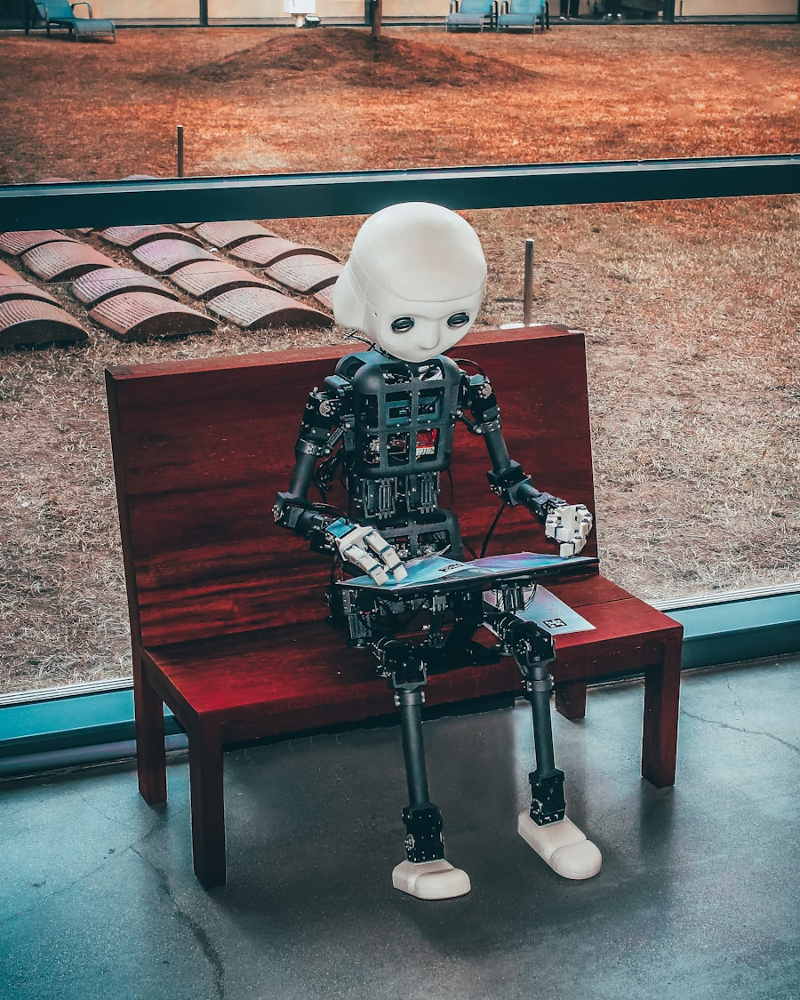
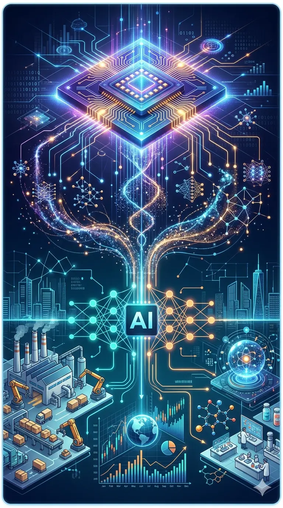
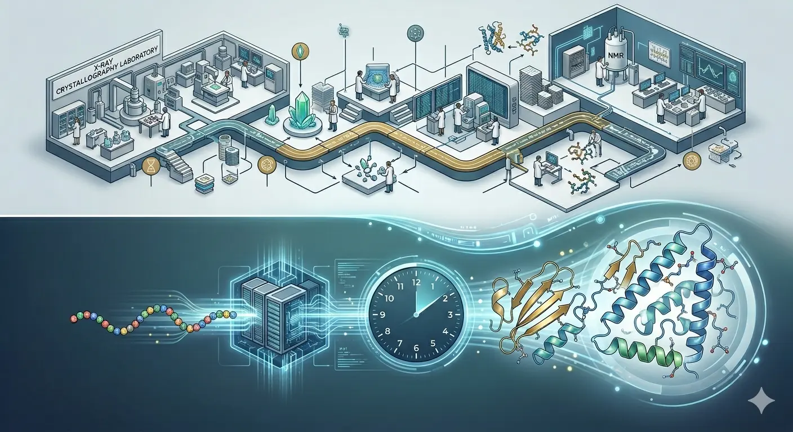
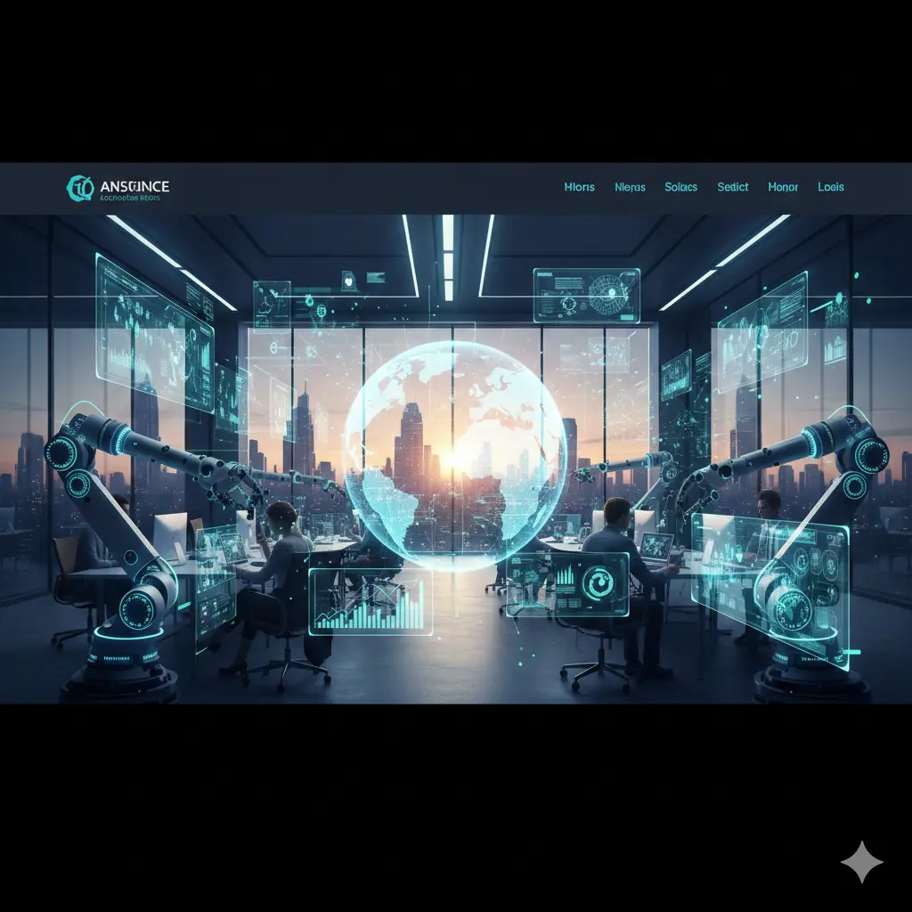
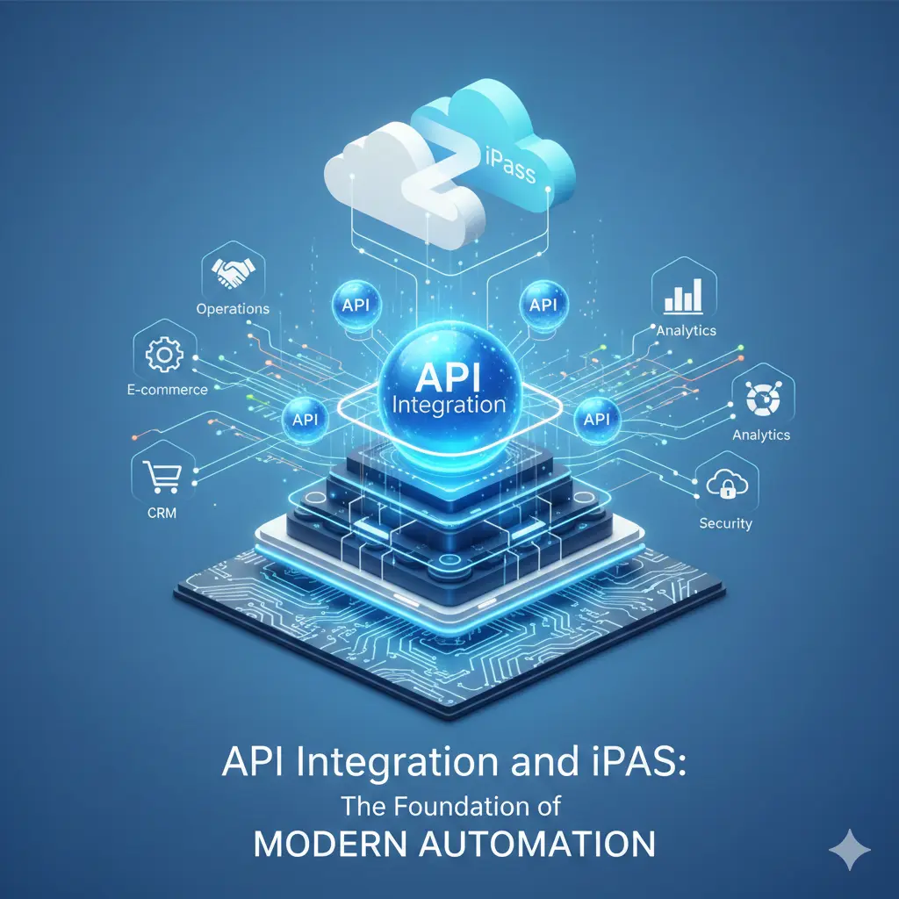

Latest Essay

Agentic AI in the Enterprise: From Pilot to Production — The 2026 Reality Check
The majority of agentic AI pilots are failing to reach production — and the reasons are specific, fixable, and rarely discussed. A practitioner's analysis of what's working in 2026, why most fail, and how to bridge the gap.
Read full essay →The Archive

Quantum-AI Convergence: The Computing Revolution at Enterprise Scale
How quantum computing and AI are merging to solve previously impossible problems. IBM's 2026 quantum advantage milestone and practical enterprise applications.
Multimodal AI Reasoning: When AI Understands More Than Just Text
Enterprise AI evolving from single-input systems to unified reasoning across text, images, audio, and video. Real use cases for 2026.

AI-Powered Scientific Discovery: From Lab to Breakthrough
How AI is accelerating drug discovery, materials science, and fundamental research. AlphaFold breakthroughs and the 2026 inflection point.
AI & Automation in 2026: The Trends Shaping Technology and Work
A clear-eyed analysis of where AI and automation stand. From agentic AI to enterprise hyperautomation and workforce transformation.
Agent-Orchestrated Development Cycles
How multi-agent AI workflows are reshaping modern software delivery. Agent collaboration across planning, development, testing, and delivery.

The AI Integration Revolution is Here: Meet MCP
How the Model Context Protocol is transforming AI assistant integration — a universal standard for connecting AI to data sources and tools.

AI Automation in the Enterprise: 2025 Trends That Matter
How organizations are moving beyond hype to implement practical AI automation that delivers measurable business value. From RPA to AI agents in production.
Business Process Automation for SMEs: A Practitioner's Guide
Real-world lessons from designing automation in small and medium enterprises. A systematic approach to identifying opportunities and delivering ROI.
The Hidden ROI of Workflow Automation: Measuring What Actually Matters
Beyond time-saved metrics. Capturing the real business value of automation across efficiency, quality, employee experience, and strategic enablement.
Conversational AI in Business: Beyond the Chatbot Hype
From frustrating bots to AI conversations that actually solve business problems. Context management, action capability, and intelligent routing at scale.
Low-Code Automation Platforms: Empowering Citizen Developers
How low-code tools democratize automation while maintaining governance and scalability. Building citizen developer programs that deliver value.
Intelligent Document Processing: From OCR to Understanding
How AI transforms document processing from data extraction to genuine comprehension. Applications in invoices, contracts, claims, and onboarding.

API Integration and iPaaS: The Foundation of Modern Automation
Building scalable integration strategies that connect systems, enable automation, and support business agility. From point-to-point chaos to API-first.
I design AI-driven automation that actually ships — and keeps running once the consultants leave.
I'm an independent consultant on AI and enterprise automation, and the founder of TheFlowMinds. I help organizations cut through AI hype and build systems that eliminate repetitive work, reduce human error, and free teams to focus on what actually grows the business — architected for governance, observability, and the unglamorous reality of production.
AI & Automation Advisory
Opportunity assessment, target operating models, and pragmatic roadmaps that translate executive ambition into a sequence of fundable, deliverable wins.
Intelligent Process Design
End-to-end design of agentic and rule-based workflows — orchestration, integration, document understanding, and the human-in-the-loop controls that make them safe.
Production & Governance
Moving pilots into production with real SLAs, monitoring, audit trails, and the operating discipline that separates a working system from an expensive demo.